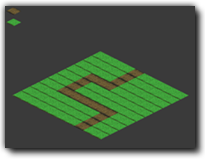

Tutorial
Page 1 of 6
Isometric Games
Welcome to GameMaker. This tutorial will demonstrate how to use GameMaker to build
a simple Isometric game. To follow this tutorial you will need to have a basic understanding of how GameMaker
works and preferrably will already have an understanding of how GameMaker's scripting language works.
Isometric games have been around for a long time (early examples of isometric games include Q*bert and Zaxxon, both released in 1982).
They are particularly popular for resource management games where the pseudo-3D look and feel of such games provides a more immersive experience
than simply presenting the level in a purely 2D manner whilst retaining the technological simplicity of a sprite based game. Such games have
experienced a resurgence in recent years due to the increasing popularity of internet browser based games.
The end result of the tutorial should look like this:

The game will use some special resources created for this purpose. To find them on your computer, please go to the top of the GameMaker screen and select the Help
drop-down menu. You will see an option marked Open Project in explorer. If you select that then the standard file explorer will open showing the contents of you
GameMaker project directory, and there you can browse to "Assets" and all resources are stored here. In the process of this tutorial you may
be reminded of this location.
Click on the Next button to go to the next page of the tutorial.